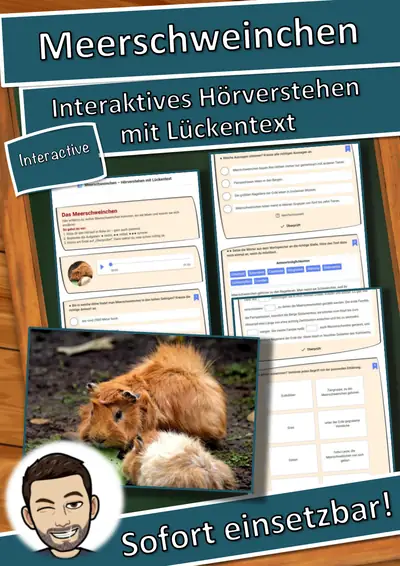
Meerschweinchen – Hörverstehen mit Lückentext (interaktiv)

Meer – Hörverstehen mit Lückentext (interaktiv)

Matterhorn – Hörverstehen mit Lückentext (interaktiv)
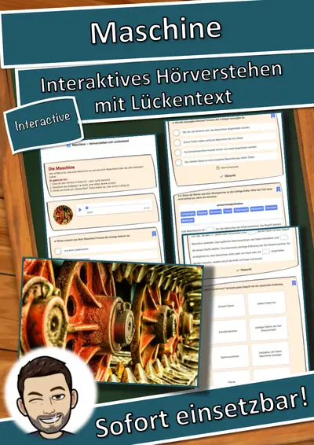
Maschine – Hörverstehen mit Lückentext (interaktiv)

Marseille – Hörverstehen mit Lückentext (interaktiv)
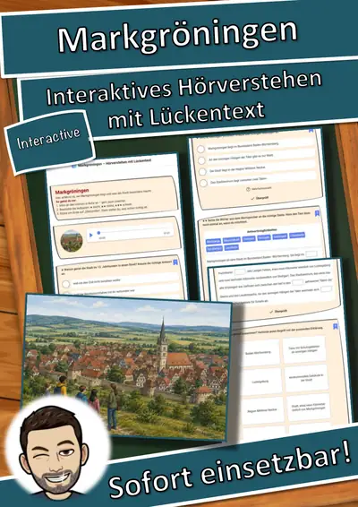
Markgröningen – Hörverstehen mit Lückentext (interaktiv)
Marienkäfer – Hörverstehen mit Lückentext (interaktiv)

Maracas – Hörverstehen mit Lückentext (interaktiv)
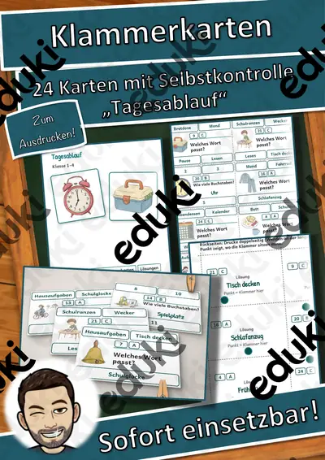
Klammerkarten: Tagesablauf – Gratis-Probe
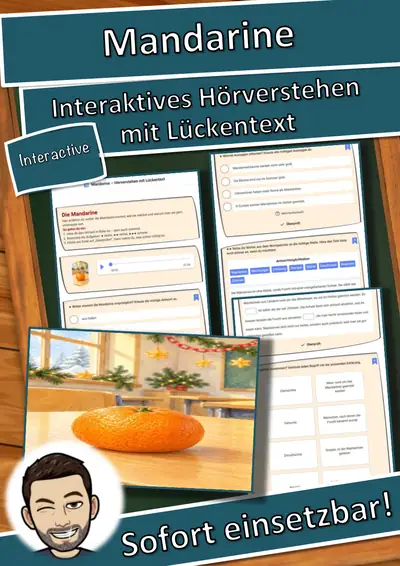
Mandarine – Hörverstehen mit Lückentext (interaktiv)

Mammut – Hörverstehen mit Lückentext (interaktiv)
Magnet – Hörverstehen mit Lückentext (interaktiv)
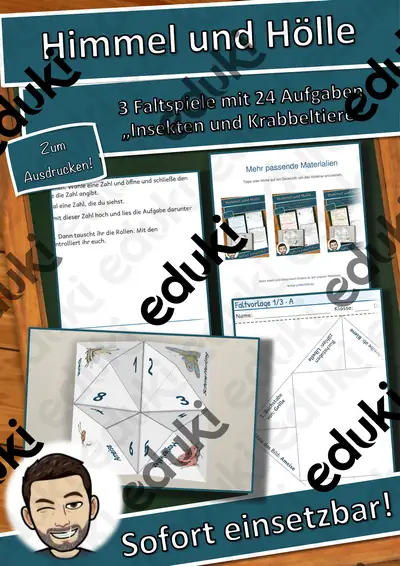
Himmel und Hölle: Insekten und Krabbeltiere – Gratis-Probe

Magen – Hörverstehen mit Lückentext (interaktiv)

Löwenzahn – Hörverstehen mit Lückentext (interaktiv)

Lupe – Hörverstehen mit Lückentext (interaktiv)
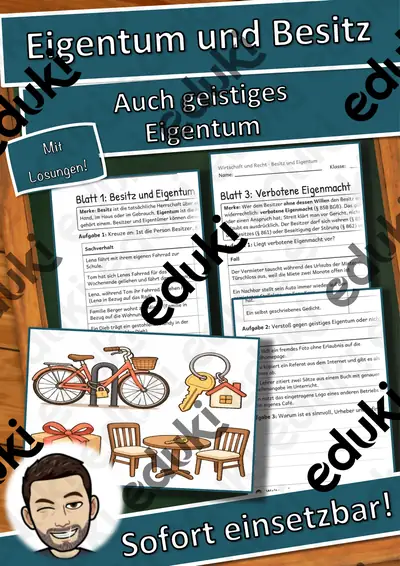
Eigentum und Besitz: auch geistiges Eigentum – Arbeitsheft mit Lösungen (WR 8, Realschule Bayern)

Lunge – Hörverstehen mit Lückentext (interaktiv)

London – Hörverstehen mit Lückentext (interaktiv)

London Eye – Hörverstehen mit Lückentext (interaktiv)
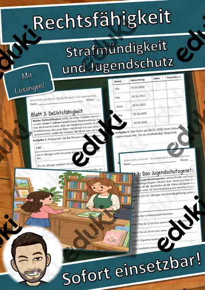
Rechtsfähigkeit: Strafmündigkeit und Jugendschutz – Arbeitsheft mit Lösungen (WR 8, Realschule)
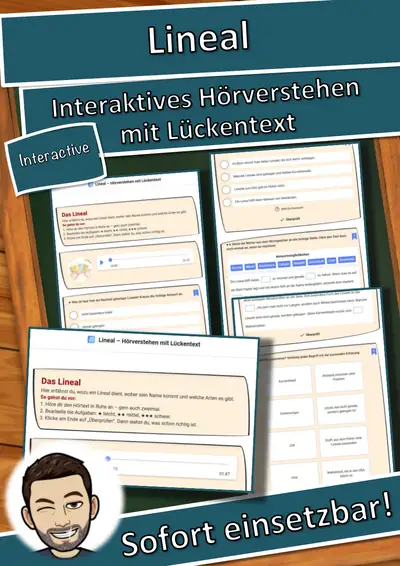
Lineal – Hörverstehen mit Lückentext (interaktiv)

Limonade – Hörverstehen mit Lückentext (interaktiv)
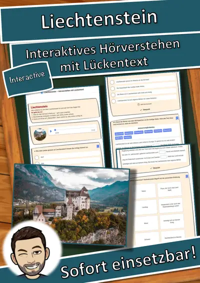
Liechtenstein – Hörverstehen mit Lückentext (interaktiv)

Recht verstehen – Arbeitsheft mit Lösungen (WR 8, Realschule Bayern)

Licht – Hörverstehen mit Lückentext (interaktiv)

Leuchtturm – Hörverstehen mit Lückentext (interaktiv)
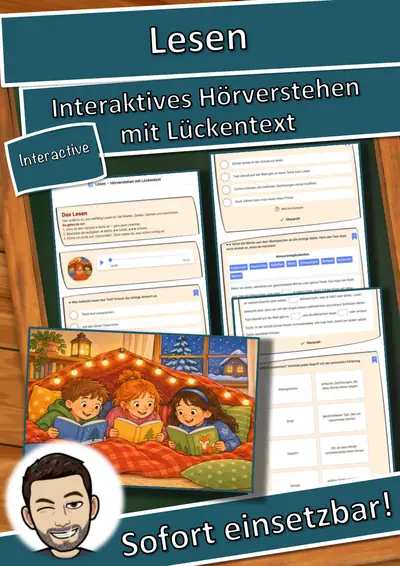
Lesen – Hörverstehen mit Lückentext (interaktiv)
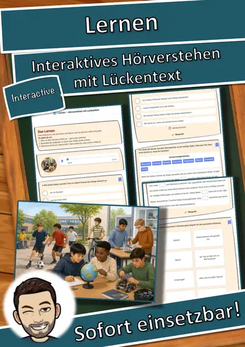
Lernen – Hörverstehen mit Lückentext (interaktiv)

Landkreis Wunsiedel im Fichtelgebirge – Hörverstehen mit Lückentext (interaktiv)

Landkreis Neustadt an der Aisch-Bad Windsheim – Hörverstehen mit Lückentext (interaktiv)

Leopard – Hörverstehen mit Lückentext (interaktiv)

Leichlingen – Hörverstehen mit Lückentext (interaktiv)

Lehrer – Hörverstehen mit Lückentext (interaktiv)

Lehm – Hörverstehen mit Lückentext (interaktiv)
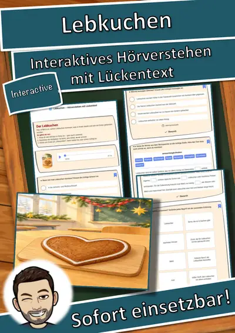
Lebkuchen – Hörverstehen mit Lückentext (interaktiv)

Leben – Hörverstehen mit Lückentext (interaktiv)

Larve – Hörverstehen mit Lückentext (interaktiv)

Laubbaum – Hörverstehen mit Lückentext (interaktiv)
Lastwagen – Hörverstehen mit Lückentext (interaktiv)

Landwirtschaft – Hörverstehen mit Lückentext (interaktiv)

Landschaft – Hörverstehen mit Lückentext (interaktiv)

Landkreis Verden – Hörverstehen mit Lückentext (interaktiv)
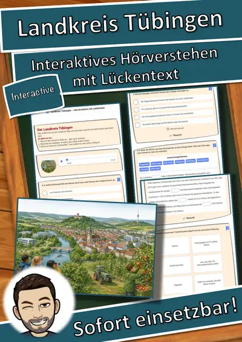
Landkreis Tübingen – Hörverstehen mit Lückentext (interaktiv)

Landkreis Traunstein – Hörverstehen mit Lückentext (interaktiv)
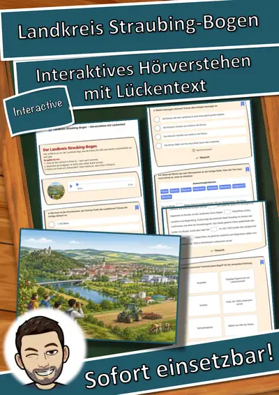
Landkreis Straubing-Bogen – Hörverstehen mit Lückentext (interaktiv)

Landkreis Starnberg – Hörverstehen mit Lückentext (interaktiv)

Landkreis Stade – Hörverstehen mit Lückentext (interaktiv)
Keine Materialien gefunden – versuch einen anderen Suchbegriff oder Filter.